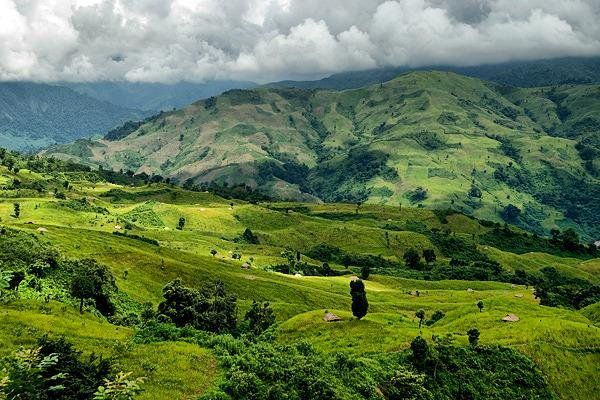

Adorning the north east region, Ziro is one of the best attractions of Arunachal Pradesh which is known to be a home to a unique tribal group. Ziro valley is an ideal location for the peace seekers who are looking for an escape from the hustle-bustle. The Apatani tribe resides here and there are pine hills and rice fields which makes this place famous. Alongside the weather here is very welcoming and remains pleasant throughout the year
Attractions In Ziro: Talley Valley Wildlife Sanctuary, Dolo Mando, Tarin Fish Farm
Best Time To Visit: March to October
The best time to visit Ziro is from March to October. Another ideal time to visit Ziro is in Early Winter, from October to November when the valley is enveloped in snow. However, the months from late November to January experience frigid temperatures as low as -13 degrees celcius; hence must be avoided.
